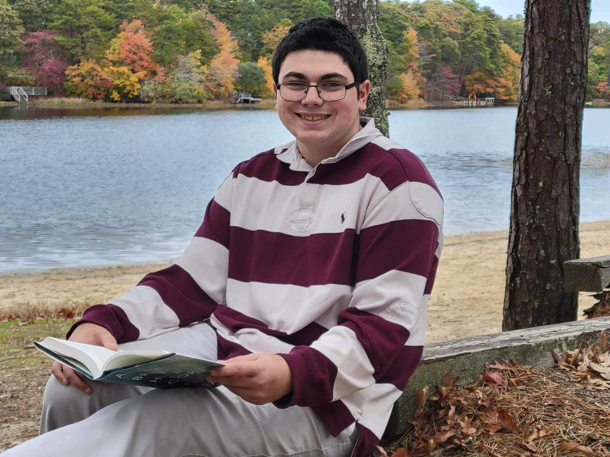
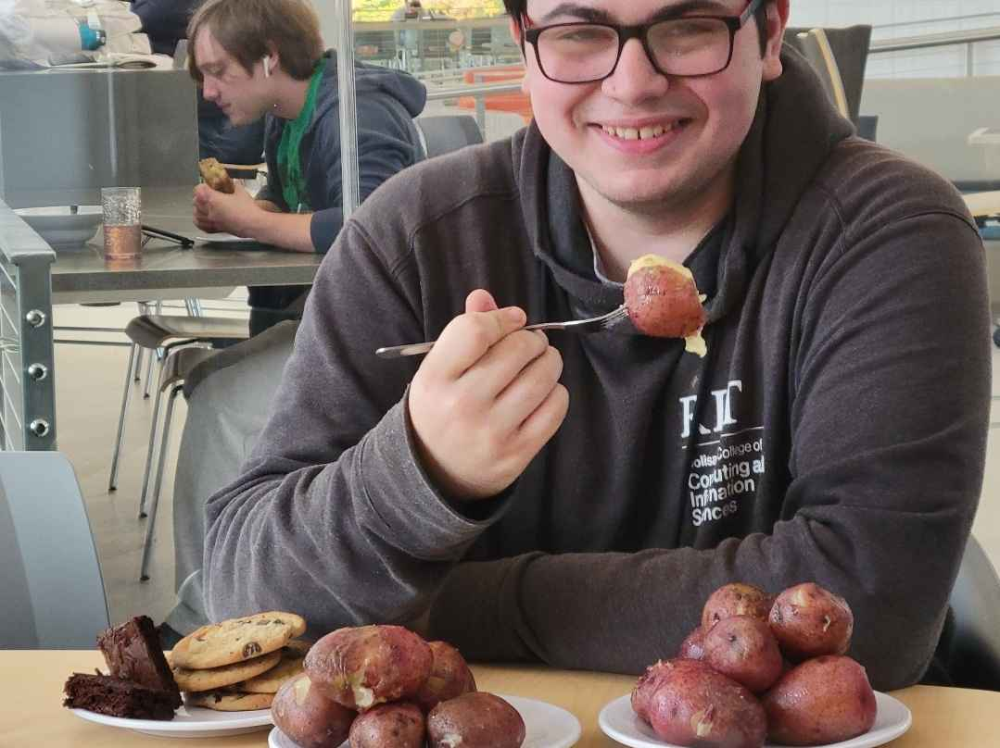
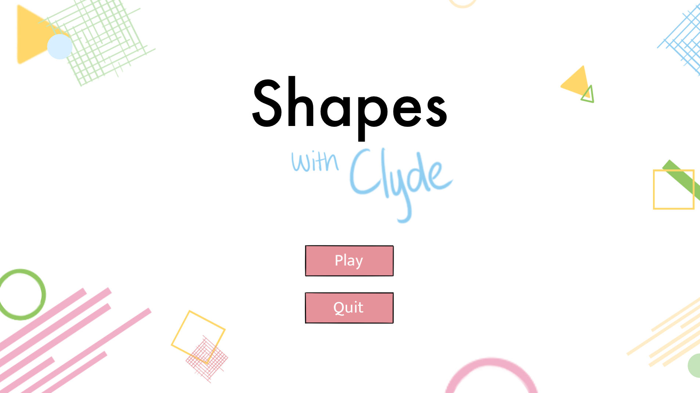
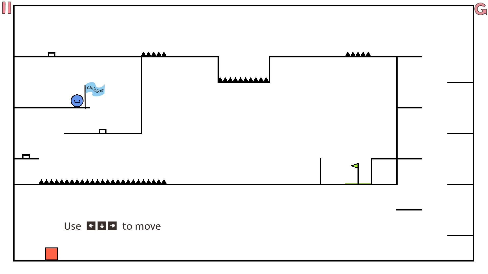
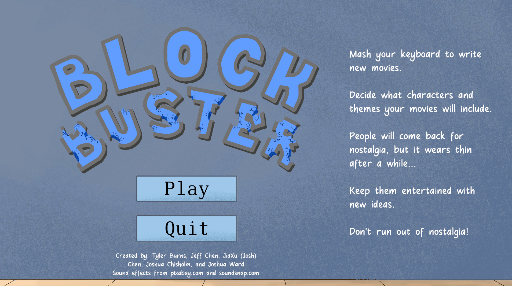
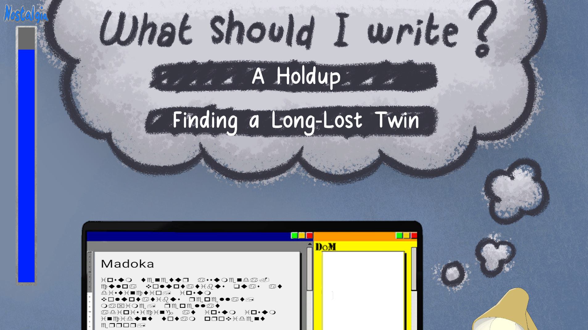

Joshua
Chisholm
A Second Year Game Design and Development Major at Rochester Institute of Technology
About me
Hello! My name is Joshua Chisholm and I am a Game Design and Development major at Rochester Institute of Technology in the Golisano College of Computing and Informational Sciences. I'm from Brewster, Massachusetts and love to read, play games, and spend time with friends and family in my spare time. I specialize in programming in C# with Unity and Monogame and I have an interest in narrative design.
I am currently learning HTML and CSS and I plan to being learning C++ in the near future. Fun fact, this was made utilizing HTML and CSS! Specifically CSS with grid to format and place things so nicely!
I enjoy playing games such as JRPGs, puzzle, strategy and action adventure games. Some of my favorites include The Legend of Zelda, Pico Park, Fire Emblem, and Metaphor ReFantazio. I enjoy games where you get to explore the world and the story behind it. I also love potatoes.
Shapes w/ Clyde
Shapes with Clyde is a puzzle-platformer I developed in a team with 3 other people in my Game Development and Algorithmic Problem Solving 2 class. It was developed using the Monogame framework in Visual Studio. The idea of the game is that you play as different shapes with different mechanics to solve puzzles in various levels. I was primarily tasked with square mechanic of compressing and launching the player. I utilized object oriented programming, inheritance, and debugging to incorporate it into the game. I also helped with the programming of features such as pressing buttons to open doors, restart levels through file reading, and coordinating with our level designer/level editor dev to ensure levels were properly read into the game. I personally designed the square and ultra hard square levels.
It was a great first experience working on a team for a game and going through the cycle of game development. We learned to adapt to each others' working habits, bounce ideas of each other, and work together to solve issues which came up. It was also a good introduction to time management tools to keep us on task by using tools such as Trello or ClickUp
With the complexity of Monogame's "do everything yourself," I found that we were successful at creating a playable game. Granted, some of the levels were designed to be way to hard, in which we learned the importance of outside playtesting. This project was a valuable experience for me.
Play Shapes with Clyde!
Blockbuster
Blockbuster is a simulation game where you, the player, are a scriptwriter and must utilize nostalgia to keep your films relevant. However, using too much nostalgia can have a negative effect, boring your audience. You must manage new and old ideas and maintain relevancy. I developed this game in a team with 4 other people for the 2024 Granola.gg 48 hour game jam at RIT. We used C# and the Unity game engine to develop this, utilizing Unity UI and programming user input to develop the game.
I was mainly in charge of developing the game loop, developing the nostalgia bar utilizing Unity UI which acts as a time for the player, and aided in translated lists of options in scripts for the player to choose from and displaying them on the screen through buttons. It was a great experience working in a group to develop something fun in such a short time.
Play Blockbuster!